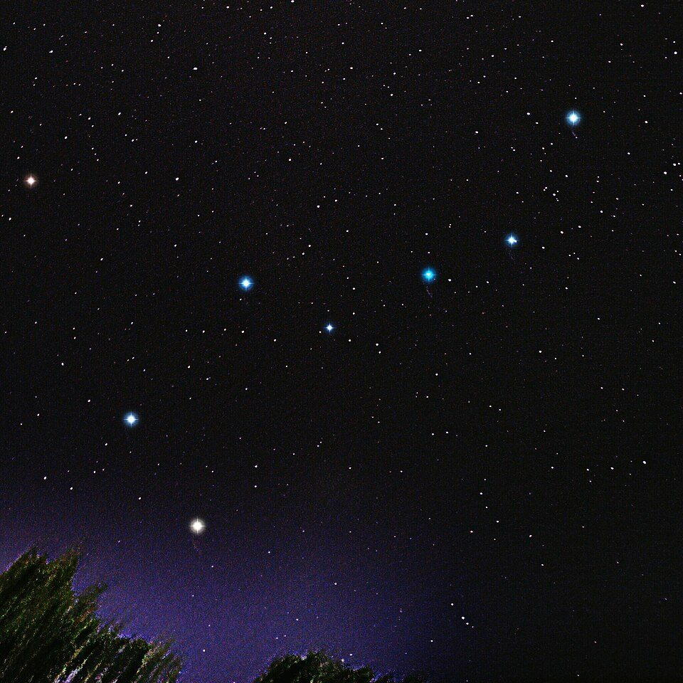

Las constelaciones
Las 88 figuras oficiales del cielo, sus leyendas y cómo encontrar las más fáciles: Orión, la Osa Mayor, Casiopea o el triángulo de verano.

.jpg){kind=link}
Desde hace miles de años, todas las culturas han unido las estrellas brillantes con líneas imaginarias para formar figuras: animales, héroes, objetos. Servían para contar historias, pero también para orientarse en el mar y saber cuándo sembrar.
88 constelaciones oficiales
En 1922 la Unión Astronómica Internacional fijó 88 constelaciones que cubren todo el cielo, como las provincias de un mapa. Unas 48 vienen del astrónomo griego Ptolomeo (siglo II), que recogió tradiciones babilónicas y griegas; las del cielo austral se añadieron en los siglos XVI a XVIII, cuando los navegantes europeos viajaron al hemisferio sur, y por eso tienen nombres como el Telescopio, la Bomba Neumática o el Microscopio.
Las estrellas de una constelación no suelen estar cerca entre sí: solo parecen juntas vistas desde la Tierra. Una puede estar a 50 años luz y su vecina en el cielo, a 2.000.
Las más fáciles de encontrar
- Orión (invierno): el cazador, con las tres estrellas alineadas de su cinturón, las Tres Marías. Arriba a la izquierda brilla la roja Betelgeuse, una supergigante que explotará algún día; abajo a la derecha, la azulada Rigel. Bajo el cinturón se distingue la nebulosa de Orión como una manchita borrosa.
- La Osa Mayor (todo el año): sus siete estrellas más brillantes forman el Carro o el Cazo. Si prolongas unas cinco veces la línea que une las dos estrellas del extremo del cazo, llegas a la estrella Polar.
- La Osa Menor: la Polar es la punta de su cola. Siempre marca el norte y apenas se mueve, porque está casi exactamente sobre el eje de rotación de la Tierra. Su altura sobre el horizonte es igual a tu latitud.
- Casiopea (todo el año): una «W» o «M» al otro lado de la Polar respecto al Carro.
- El triángulo de verano: tres estrellas muy brillantes, Vega (en la Lira), Deneb (en el Cisne) y Altair (en el Águila), que dominan las noches de julio y agosto, con la Vía Láctea pasando por en medio.
- Escorpio (verano, bajo en el sur): con su corazón rojo, Antares, y su cola curvada.

_-_increased_contrast_and_brightness.jpg){kind=link}
El zodiaco tiene 13
El zodiaco son las constelaciones por las que pasa el Sol a lo largo del año vista desde la Tierra. Los astrónomos cuentan 13, porque el Sol también cruza Ofiuco, el portador de la serpiente, entre el 29 de noviembre y el 17 de diciembre. Además, por un lento bamboleo del eje de la Tierra llamado precesión, las fechas ya no coinciden con las de los horóscopos, que se fijaron hace unos 2.000 años. La astrología no tiene base científica; la astronomía, sí.
El cielo del sur
Desde las Canarias se ven estrellas que no asoman en la península, y desde el hemisferio sur se ven la Cruz del Sur, las Nubes de Magallanes (dos galaxias vecinas) y el centro de la Vía Láctea en lo alto del cielo.
Vídeos para entenderlo mejor
- Astronomía para principiantes: Reconocer ConstelacionesAstronomiaweb · 1,8 M visualizaciones
- ¿Por qué hay constelaciones?CuriosaMente · 676 mil visualizaciones
Los vídeos son de YouTube y de sus autores. Se cargan solo al pulsar sobre ellos. Ver todos los vídeos →